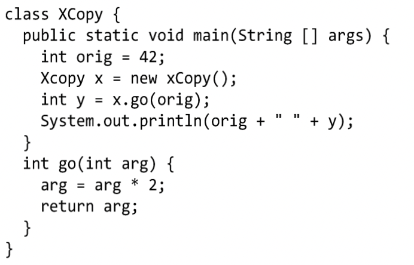
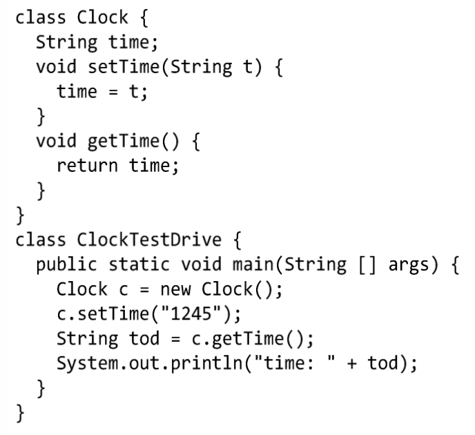

Bài tập
1. Điền vào mỗi chỗ trống một hoặc vài từ trong các từ sau: biến thực thể, đối số, giá trị trả về, phương thức get, phương thức set, đóng gói, public, private, truyền bằng giá trị, phương thức.
Một lớp có thể có số lượng tùy ý các____________.
Một phương thức chỉ có thể có một____________.
____________có thể được ngầm đổi kiểu dữ liệu.
____________có nghĩa là "tôi muốn biến thực thể của tôi ở dạng private".
____________thực chất có nghĩa là "tạo một bản sao".
____________chỉ nên được cập nhật bởi các phương thức setter.
Một phương thức có thể có nhiều____________.
____________trả về giá trị gì đó.
____________không nên được dùng cho các biến thực thể.
____________có thể có nhiều đối số.
____________giúp thực hiện nguyên tắc đóng gói.
____________lúc nào cũng chỉ có một.
2. Điền từ thích hợp vào chỗ trống trong mỗi câu sau:
a) Mỗi tham số phải được chỉ rõ một________và một________
b) Từ khóa ________ đặt tại khai báo kiểu trả về quy định rằng một phương thức sẽ không trả về giá trị gì sau khi nó hoàn thành nhiệm vụ.
3. Các phát biểu sau đây đúng hay sai? Nếu sai, hãy giải thích.
a) Cặp ngoặc rỗng() đứng sau tên phương thức tại một khai báo phương thức cho biết phương thức đó không yêu cầu tham số nào.
b) Các biến thực thể hoặc phương thức được khai báo với từ khóa private chỉ được truy cập từ các phương thức nằm trong lớp nơi chúng được khai báo.
c) Thân phương thức được giới hạn trong một cặp ngoặc {}.
d) Có thể gọi phương thức từ một biến kiểu cơ bản.
e) Các biến địa phương kiểu cơ bản về mặc định là được khởi tạo sẵn.
f) Số các đối số chứa trong lời gọi phương thức phải khớp với số tham số trong danh sách tham số của khai báo phương thức đó.
4. Phân biệt giữa biến thực thể và biến địa phương.
5. Giải thích mục đích của tham số phương thức. Phân biệt giữa tham số và đối số.
6. Tại sao một lớp có thể cần cung cấp phương thức set và phương thức get cho một biến thực thể?
7. Viết class Employee chứa ba mẩu thông tin dưới dạng các thành viên dữ liệu: tên (first name, kiểu String), họ (last name, kiểu String) và lương tháng (salary, kiểu double). Class Employee cần có một hàm khởi tạo có nhiệm vụ khởi tạo ba thành viên dữ liệu này. Hãy viết một hàm set và một hàm get cho mỗi thành viên dữ liệu. Nếu lương tháng có giá trị âm thì hãy gán cho nó giá trị 0.0. Viết một chương trình thử nghiệm EmployeeTest để chạy thử các tính năng của class Employee. Tạo hai đối tượng Employee và in ra màn hình tổng lương hàng năm của mỗi người. Sau đó cho tăng lương cho mỗi người thêm 10% và hiển thị lại lương của họ theo năm.
8. Tạo một lớp có tên Invoice (hóa đơn) mà một cửa hàng có thể dùng để biểu diễn một hóa đơn cho một món hàng được bán ra tại cửa hàng. Mỗi đối tượng Invoice cần có 4 thông tin chứa trong các thành viên dữ liệu: số hiệu của mặt hàng (partNumber kiểu String), miêu tả mặt hàng (partDescription kiểu String), số lượng bán ra (quantity kiểu int) và đơn giá (unitPrice kiểu double). Lớp Invoice cần có một hàm khởi tạo có nhiệm vụ khởi tạo 4 thành viên dữ liệu đó. Hãy viết một phương thức set và một phương thức get cho mỗi thành viên dữ liệu. Ngoài ra, hãy viết một phương thức có tên getInvoiceAmount với nhiệm vụ tính tiền hóa đơn (nghĩa là số lượng nhân với đơn giá), rồi trả về giá trị hóa đơn dưới dạng một giá trị kiểu double. Nếu số lượng không phải số dương thì cần gán cho nó giá trị 0. Nếu đơn giá có giá trị âm, nó cũng cần được gán giá trị 0.0. Viết một ứng dụng thử nghiệm tên là InvoiceTest để chạy thử các tính năng của class Invoice.
9. Tìm và sửa lỗi của các chương trình sau (mỗi phần là một file mã nguồn hoàn chỉnh).
a)

b)
